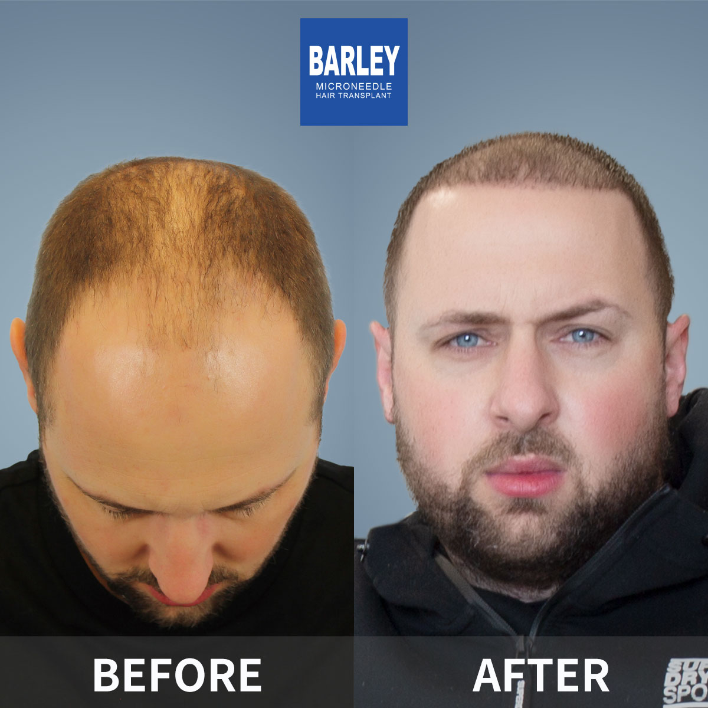
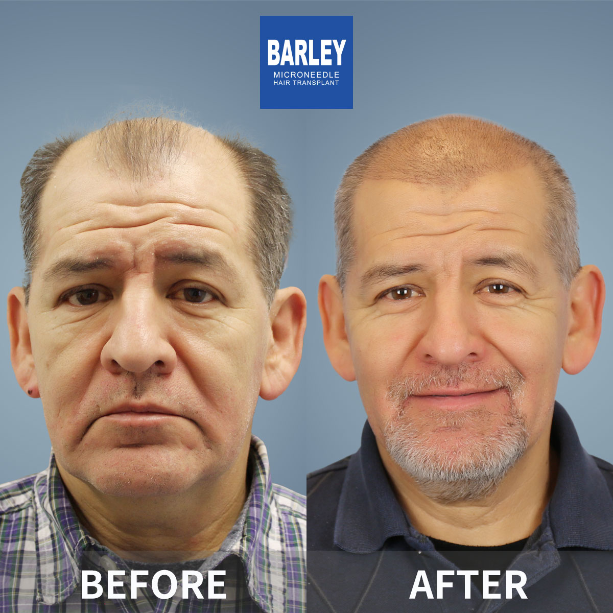
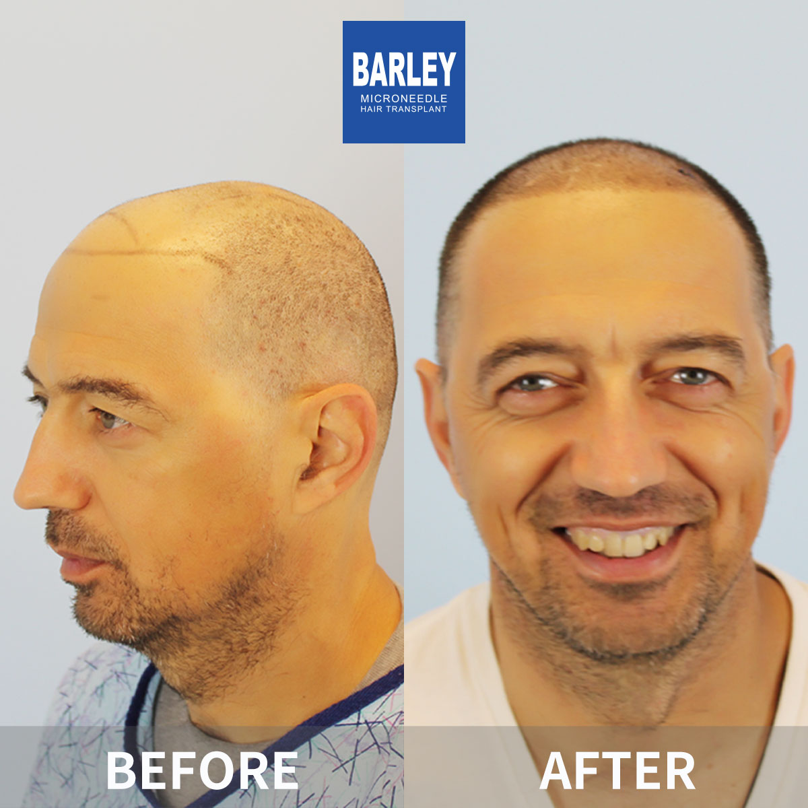
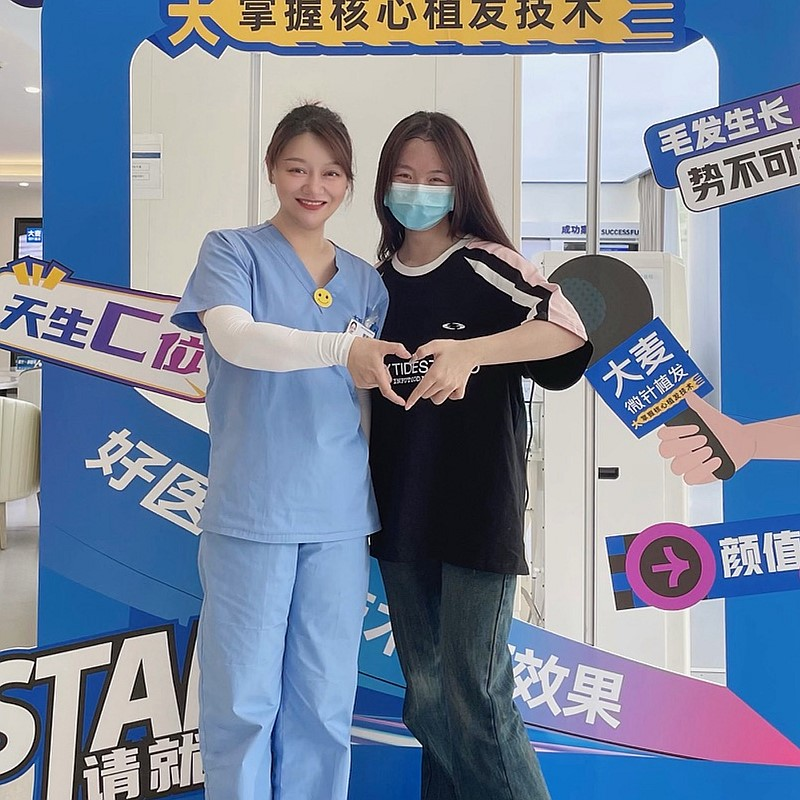

Advanced treatments for all stages of hair loss, from early thinning to advanced baldness
Our baldness restoration program offers comprehensive solutions for Norwood III-VI baldness. We combine advanced microneedle FUE technology with strategic multi-session planning to deliver natural, life-changing results even for advanced baldness.

Combined FUE & FUT for large area baldness coverage
Strategic planning for life-changing results
Complete scalp and donor evaluation with master surgeon using 3D analysis
Comprehensive multi-session strategy created to achieve your coverage goals
Advanced FUE harvesting maximizing follicular unit quality and quantity
Precision incisions following natural hair angles and optimized density patterns
Expert placement with patented implant pen for maximum survival and growth
Optional subsequent sessions as needed to build density and coverage over time
Why our comprehensive approach delivers life-changing, long-lasting coverage
We don't just treat today—we plan for your future. Our master surgeons create comprehensive, long-term strategies that consider future hair loss, donor availability, and staged procedures to ensure you always have a natural, youthful appearance.
With 18+ years of experience, we've perfected donor harvesting techniques that maximize usable follicles while preserving donor area integrity. Our high-yield extraction gets more quality grafts per procedure, meaning fewer sessions needed.
From hairline to crown, we create comprehensive coverage that looks naturally dense in all lighting and hairstyles. Our strategic density placement ensures you can style your hair confidently without worrying about visible thinning.
Industry leader with proven results
Pioneer and leader in microneedle hair transplant technology since 2006
Across major cities in China, all with the same high standards
Innovative microneedle and implant pen technology for superior results
Trusted by patients from around the globe for life-changing results
Full English support for international patients throughout treatment
State-of-the-art facilities and strict safety protocols for your peace of mind
See the amazing transformations our patients have achieved






Moments captured with our satisfied patients

Very happy with result

Couldn't be happier

Feeling amazing

Professional job

Pleased with outcome

Great choice made

Perfect transformation

Feeling wonderful
Hear from our satisfied patients around the world
Complete restoration from front to crown! I can't believe how natural it looks! Found them on Google and Bing!
My Norwood 6 baldness is completely restored! The density and coverage are perfect!
Never thought I'd have a full head of hair again! The transformation is absolutely incredible!
Complete coverage achieved with perfect density! The team's skill made this possible!
My entire bald area is now fully restored! The natural direction and growth are perfect!
Complete baldness restored to a full, natural head of hair! Best decision I ever made!
Experience our modern and comfortable facilities

Our state-of-the-art facility

Relax in our premium lounge

Sterile and advanced

Private and professional

Comfortable post-op space

Welcoming entrance
Find answers to common questions about hair transplantation
Contact us for a free consultation
15810155700
+86 13730143529
hairtransplant@qq.com